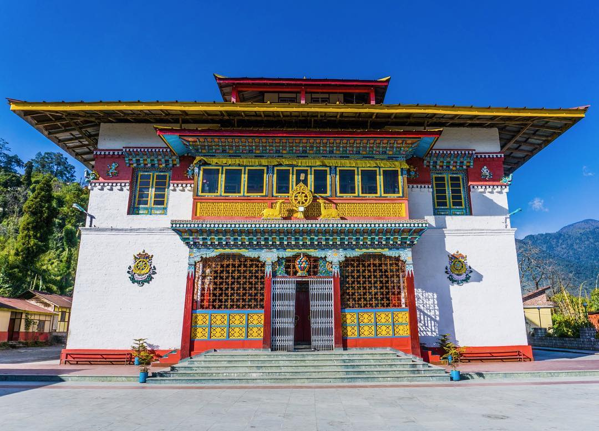
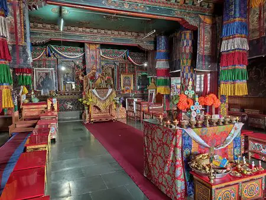
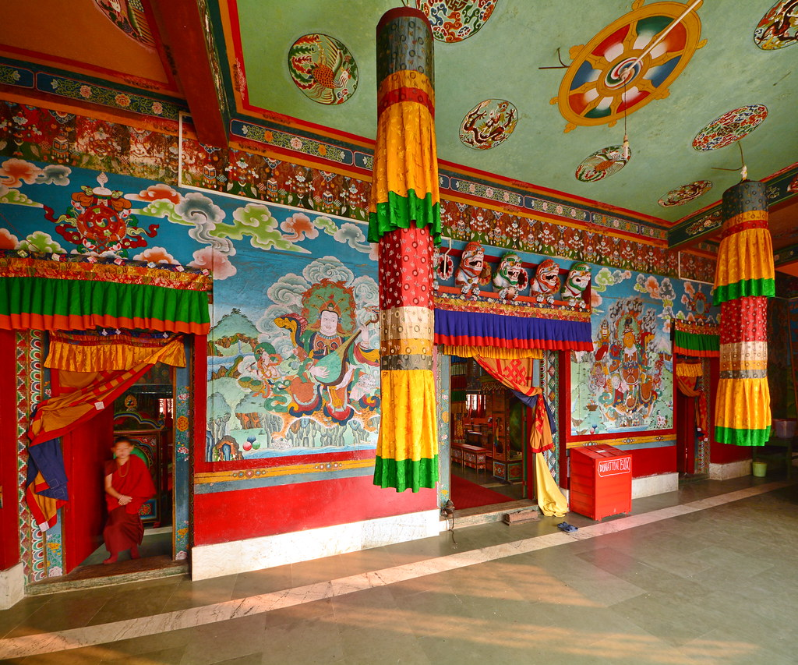
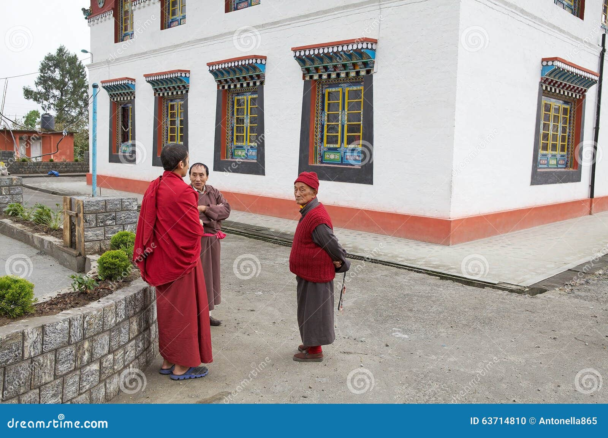

Phodong Monastery, situated near Lachung in North Sikkim, was founded in the early 18th century and belongs to the Nyingma order of Tibetan Buddhism. It is renowned for its majestic Tibetan-style architecture, vibrant murals, and serene surroundings. The monastery houses numerous monks and serves as a center for religious learning and cultural preservation.
Photo Gallery




Key Features
- Historic Nyingma monastery with centuries-old traditions.
- Famous for Tibetan-style architecture, colorful murals, and prayer halls.
- Hosts annual Cham dances and Buddhist festivals.
- Houses sacred relics, statues, and religious texts.
- Located on a scenic hill offering panoramic views of North Sikkim.
History & Significance
Phodong Monastery has historically been a major center for Buddhist learning and meditation in Sikkim. It preserves traditional rituals, teaches young monks, and plays a key role in cultural and spiritual festivals in the region.
Tourist & Travel Information
The monastery is accessible from Lachung via taxi or local transport. Visitors can explore the monastery complex, enjoy peaceful surroundings, witness festivals, and experience traditional Sikkimese Buddhist culture.